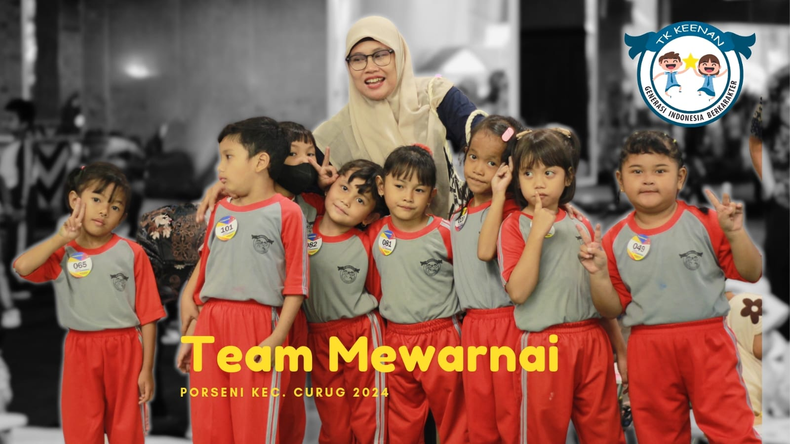

Porseni di tingkat Taman Kanak-Kanak (TK) adalah acara tahunan yang menggabungkan kegiatan olahraga dan seni untuk melibatkan murid usia pra-sekolah. TK Keenan merayakan kemenangan dengan semangat kebersamaan dan prestasi luar biasa. Melalui Porseni yang meriah, sekolah ini berhasil menciptakan atmosfer yang penuh kreativitas dan kegembiraan. Dengan tingkat partisipasi yang tinggi, murid-murid TK Keenan menunjukkan semangat sportif dan bakat yang luar biasa dalam berbagai lomba olahraga dan seni. Prestasi akademis dan kreativitas murid-murid tercermin dalam karya seni yang memukau dan semangat belajar yang menginspirasi. TK Keenan tidak hanya meraih kemenangan dalam lomba, tetapi juga dalam membentuk karakter, memupuk semangat kolaboratif, dan menginspirasi pertumbuhan positif pada setiap anak.
Ayo Bergabung!"Bersiap adalah setengah dari kemenangan."